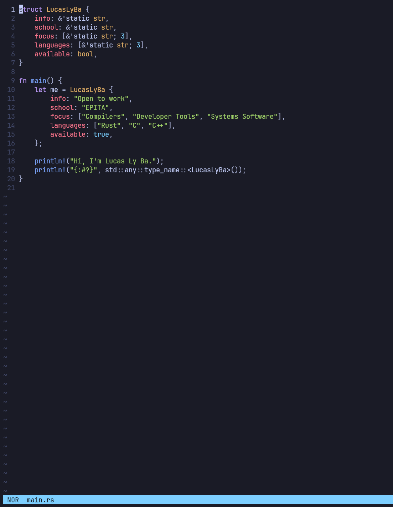

Lux
A modal, Helix-inspired text editor written from scratch in Rust.
Overview
Lux is a small but real terminal text editor built in Rust, inspired by Helix's selection-first, modal editing model. The interesting parts — the text data structure, the syntax engine, the undo system, the language-server client — are all built by hand rather than pulled off the shelf. The goal was to understand how an editor works, not just use one.

What I built
- A rope for the text buffer instead of a flat string, so edits stay cheap on large files.
- tree-sitter highlighting with incremental re-parsing as you type.
- A hand-written LSP client over JSON-RPC, talking to
rust-analyzerfor live diagnostics and completion. - Undo/redo as a tree rather than a linear stack.
- Modal editing — normal / insert / visual, with a
:command line — and a test suite (92 tests) covering the internals.
The piece I'm proudest of is the undo tree: a linear undo stack throws your redo history away the instant you type after undoing, so modelling history as a tree — every branch still reachable — is what makes editing feel safe to explore. The build journey walks through that and the rest, module by module.